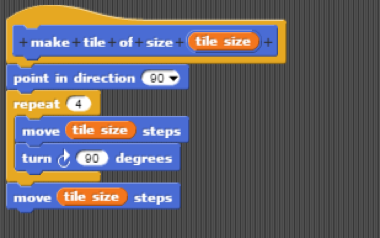
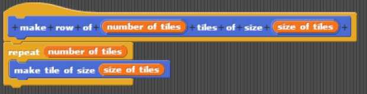
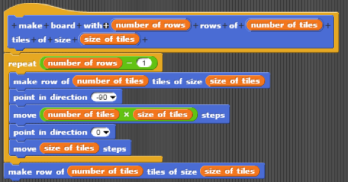

Nach Beginn des Spiels wird ein Spielfeld von Sprite1 aufgemalt. Dieses Gitter besteht aus drei Zeilen und drei Spalten und ist vielen als herkömmliches Tic-Tac-Toe Spielfeld bekannt.
Übersetzung: Nachdem Sprite1 die Broadcast-Nachricht „Spiel gestartet!“ von Sprite5 erhalten hat, zeigt er sich. Er hat ein Saturn-Kostüm an! In diesem Programmteil nimmt der Sprite die Funktion eines Stiftes an, der eine Linie von vordefinierter Farbe und Breite nach sich zieht, während er sich über den Hintergrund (Stage) bewegt. Um zu dem Eckpunkt des Spielfelds (x: -150 y: -50) zu gelangen, ohne Schlieren /Striche zu hinterlassen, ist der „Pen Up“-Block nötig. Bevor der „Stift“ (Sprite1) auf das „Papier“ (Hintergrund) gesetzt wird, werden dessen Farbe und Breite definiert. Mit dem „Pen Down“-Block beginnt der Stift das Feld mit drei Zeilen und drei Spalten, der Breite 100, zu zeichnen. Nachdem er 1,5 Sekunden lang gewartet hat, um dem Spieler eine Phase der Orientierung zu verschaffen, vermittelt er die Broadcast-Nachricht „Spielfeld vorbereitet!“ an die übrigen Sprites und verschwindet von der Bildfläche. Auf den folgenden Bildern ist zu erkennen, wie der Block, der den Sprite dazu anweist, das 33 Spielfeld auf den Hintergrund aufzubringen, in drei Schritten entsteht:
1.Zunächst haben wir den Block „Make Tile of Size ...“ erstellt, mithilfe unseres Vorwissens aus den Tutorials. Damit die Größe der Spielfeldzellen auch nachträglich angepasst werden kann, haben wir die Kantenlänge nicht definiert, sondern eine Variable eingefügt. Diese nennt sich „Tile Size“ und beschreibt die Anzahl von Schritten, die der Sprite sich bewegt, bevor er sich um 90° nach rechts dreht und damit eine Ecke bildet. Zudem ist für unser weiteres Vorgehen wichtig, dass die Bewegung an der Stelle aufhört, an der sie angefangen hat, weshalb eine der vier Kanten doppelt gezeichnet wird. Das ist nicht für das Zeichnen einzelner Spielfeldzellen, sondern für das Zeichnen einer Reihe von Spielfeldzellen relevant.

2.Wie bereits angedeutet, werden im nächsten Schritt mehrere Spielfeldzellen zu einer Reihe zusammengefügt, dessen Länge von der Variable „Number of Tiles“ definiert wird. Dabei kann der Vorgang, ein Quadrat von gleichem Start- und Endpunkt zu zeichnen, beliebig oft wiederholt werden, im Falle von Tic-Tac-Toe genau dreimal.

3.Im dritten Schritt werden mehrere Reihen, unter Einführung einer weiteren Variable („Number of Rows“), zu Spalten zusammengefügt. Da der Sprite zu einem universalen Starpunkt zurückkehren muss, um eine neue Reihe abzubrechen, sieht das Programm komplizierter aus, als es eigentlich ist. Der Sprite zeichnet eine Reihe von Spielfeldzellen, zeigt anschließend nach links und bewegt sich um die Länge der gesamten Reihe, also um Kantenlänge und Anzahl der Spielfeldzellen miteinander multipliziert. Anschließend zeigt er nach oben und macht eine Anzahl von Schritten, die der Kantenlänge der Felder entspricht. Dies ist der Punkt, von dem er beginnen kann, eine neue Reihe zu zeichnen. Nur bei der letzten Zeile braucht der Sprite nicht zum Startpunkt zurückkehren, da er keine neue Zeile anbrechen muss.
